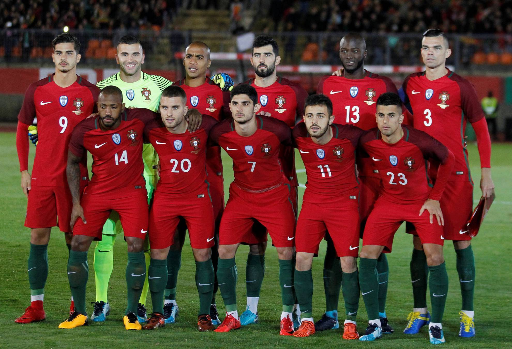

Ranking FIFA: 9° (octubre 2022).
¿Cómo se clasificó al Mundial? Derrotó por 2-0 a Macedonia del Norte en la definición de una de las repescas europeas.
Rendimiento en 2021 (G-E-P): 9-4-3 (34 GF, 14 GC, +20).
Rendimiento en 2022: 5-1-2 (16 GF, 4 GC, +12).
Diogo Costa; Joao Cancelo, Pepe, Rúben Días, Nuno Mendes; Danilo Pereira, Joao Moutinho; Bernardo Silva, Bruno Fernandes, Diogo Jota; Cristiano Ronaldo.
Nacionalidad: portugués.
Edad: 68 años.
Contratado: 23 de septiembre de 2014.
Récord en el cargo (G-E-P): 64-21-18.
Títulos en el cargo: Eurocopa 2016, Liga de Naciones 2018-2019.
Victoria más notable: 1-0 sobre Francia, final de la Eurocopa 2016.
1930 Uruguay -
1934 Italia -
1938 Francia -
1950 Brasil -
1954 Suiza -
1958 Suecia -
1962 Chile -
1966 Inglaterra 3°
1970 México -
1974 Alemania -
1978 Argentina -
1982 España -
1986 México 17°
1990 Italia -
1994 Estados Unidos -
1998 Francia -
2002 Corea y Japón 21°
2006 Alemania 4°
2010 Sudáfrica 11°
2014 Brasil 18°
2018 Rusia 13°
